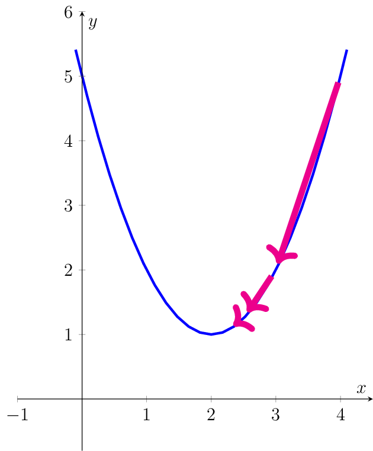
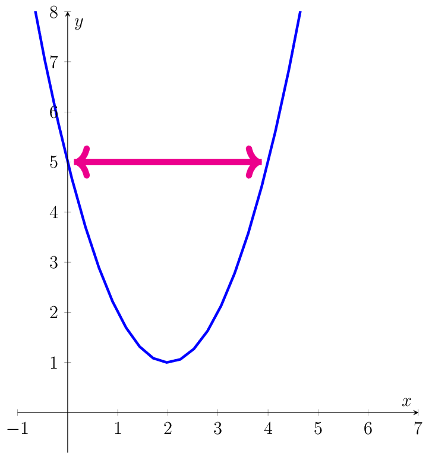
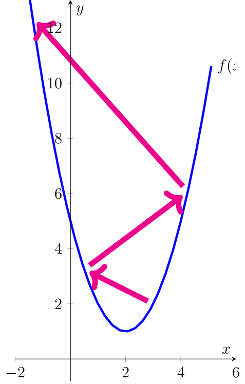

Exercises#
Convex Functions#
Show that nonnegative weighted sums of convex functions are convex. That is, show for all \(\lambda_1,\ldots,\lambda_k\geq 0\) and convex functions \(f_1,\ldots,f_k:\mathcal{X}\rightarrow \mathbb{R}\), that the function
\[f(\vvec{x}) = \lambda_1 f_1(\vvec{x})+\ldots + \lambda_k f_k(\vvec{x})\]is convex.Let
\[f(\vvec{x}) = \lambda_1 f_1(\vvec{x})+\ldots + \lambda_k f_k(\vvec{x})\]for \(\lambda_1,\ldots,\lambda_k\geq 0\) and \(f_1,\ldots,f_k:\mathcal{X}\rightarrow \mathbb{R}\) be convex functions. Let \(\alpha\in[0,1]\) and \(\vvec{x},\vvec{y}\in\mathcal{X}\). Then we have to show according to the definition of convex functions that\[f(\alpha\vvec{x}+(1-\alpha)\vvec{y})\leq \alpha f(\vvec{x})+(1-\alpha)f(\vvec{y}).\]According to the definition of \(f\), we have\[\begin{align*} f(\alpha\vvec{x}+(1-\alpha)\vvec{y}) &= \lambda_1 f_1(\alpha\vvec{x}+(1-\alpha)\vvec{y})+\ldots + \lambda_k f_k(\alpha\vvec{x}+(1-\alpha)\vvec{y}) \end{align*}\]Since \(f_i\) is convex for \(1\leq i\leq k\), for the functions \(f_i\) holds that
\[f_i(\alpha\vvec{x}+(1-\alpha)\vvec{y})\leq \alpha f_i(\vvec{x})+(1-\alpha)f_i(\vvec{y}).\]Now we multiply the inequality above with the nonnegative value \(\lambda_i\). Note that here it becomes obvious why the coefficients have to be nonnegative. Multiplying an inequality with a negative value changes the direction of the inequality, that is a \(\leq\) becomes a \(\geq\) and vice versa. However, here we have only nonnegative values \(\lambda_i\) and thus, multiplying with the coefficient keeps the inequality intact:(4)#\[\begin{align} \lambda_if_i(\alpha\vvec{x}+(1-\alpha)\vvec{y})&\leq \lambda_i(\alpha f_i(\vvec{x})+(1-\alpha)f_i(\vvec{y}))\nonumber\\ &= \alpha \lambda_i f_i(\vvec{x})+(1-\alpha)\lambda_i f_i(\vvec{y}).\label{eq:ficonv} \end{align}\]We can now put these inequalities together to derive the convexity of the function \(f\):
\[\begin{align*} f(\alpha\vvec{x}+(1-\alpha)\vvec{y}) &= \lambda_1 f_1(\alpha\vvec{x}+(1-\alpha)\vvec{y})+\ldots + \lambda_k f_k(\alpha\vvec{x}+(1-\alpha)\vvec{y})\\ &= \sum_{i=1}^k \lambda_i f_i(\alpha\vvec{x}+(1-\alpha)\vvec{y})\\ &\leq \sum_{i=1}^k \alpha \lambda_i f_i(\vvec{x})+(1-\alpha)\lambda_i f_i(\vvec{y})&\text{apply Eq.~\eqref{eq:ficonv}}\\ &= \alpha \sum_{i=1}^k \lambda_i f_i(\vvec{x})+(1-\alpha)\sum_{i=1}^k\lambda_i f_i(\vvec{y})\\ &=\alpha f(\vvec{x}) + (1-\alpha)f(\vvec{y}).&\text{apply definition of $f$} \end{align*}\]This concludes what we wanted to show.
If \(g:\mathbb{R}^d\rightarrow \mathbb{R}^k\), \(g(\vvec{x})=A\vvec{x}+\vvec{b}\) is an affine map, and \(f:\mathbb{R}^k\rightarrow \mathbb{R}\) is a convex function, then the composition
\[f(g(\vvec{x}))=f(A\vvec{x}+\vvec{b})\]is a convex function.Let \(g:\mathbb{R}^d\rightarrow \mathbb{R}^k\), \(g(\vvec{x})=A\vvec{x}+\vvec{b}\) be an affine map, and let \(f:\mathbb{R}^k\rightarrow \mathbb{R}\) be a convex function. Then we have to show according to the definition of convex functions that
\[\begin{align*} f(g(\alpha\vvec{x}+(1-\alpha)\vvec{y}))&\leq \alpha f(g(\vvec{x}))+(1-\alpha)f(g(\vvec{y}))\\ \Leftrightarrow f(A(\alpha\vvec{x}+(1-\alpha)\vvec{y})+\vvec{b})&\leq\alpha f(A\vvec{x}+\vvec{b})+(1-\alpha)f(A\vvec{y}+\vvec{b}). \end{align*}\]We might see already that the term on the right could be derived from the convexity of \(f\). To do so, we first need to put the argument of \(f\) on the left into the form \(\alpha (A\vvec{x}+\vvec{b})+(1-\alpha)(A\vvec{y}+\vvec{b}\). This, we can actually achieve like this:
\[\begin{align*} A(\alpha\vvec{x}+(1-\alpha)\vvec{y})+\vvec{b} &= \alpha A\vvec{x}+(1-\alpha)A\vvec{y}+\vvec{b} & \text{(linearity)} \\ &= \alpha A\vvec{x}+(1-\alpha)A\vvec{y}+(\alpha + 1-\alpha)\vvec{b}\\ &=\alpha A\vvec{x}+(1-\alpha)A\vvec{y}+\alpha\vvec{b} + (1-\alpha)\vvec{b}\\ &=\alpha (A\vvec{x}+\vvec{b})+(1-\alpha)(A\vvec{y}+\vvec{b}) \end{align*}\]As a result, we get with respect to \(g\) that:
\[\begin{align*} g(\alpha\vvec{x}+(1-\alpha)\vvec{y}) &= A(\alpha\vvec{x}+(1-\alpha)\vvec{y})+\vvec{b}\\ &=\alpha (A\vvec{x}+\vvec{b})+(1-\alpha)(A\vvec{y}+\vvec{b})\\ &= \alpha g(\vvec{x}) + (1-\alpha)g(\vvec{y}). \end{align*}\]If we apply now the function \(f\) to the equality above and use the convexity of \(f\), then we can conclude what we wanted to show:
\[\begin{align*} f(g(\alpha\vvec{x}+(1-\alpha)\vvec{y}))&= f\left(\alpha g(\vvec{x}) + (1-\alpha)g(\vvec{y})\right)\\ &\leq \alpha f\left( g(\vvec{x})\right) + (1-\alpha) f\left(g(\vvec{y})\right). \end{align*}\]
Numerical Optimization#
Compute three gradient descent steps for the following objective:
\[\begin{align*}\min (x-2)^2 + 1 \quad\text{ s.t. }x\in\mathbb{R}\end{align*} \]Try the following combinations of initalizations and step sizes:
\(x_0=4\), step size \(\eta=\frac14\)
\(x_0=4\), step size \(\eta=1\)
\(x_0=3\), step size \(\eta=\frac54\)
Mark the iterates \(x_1\), \(x_2\) and \(x_3\) in a plot of the objective function. What do you observe regarding the convergence of gradient descent methods? Does gradient descent always “descent” from an iterate?
In order to conduct gradient descent, we need the derivative:
\[\begin{align*} f(x) &= (x-2)^2 +1\\ f'(x)&= 2(x-2) \end{align*}\]The gradient descent update rules are defined as
\[x_{t+1}=x_t-\eta f'(x_t).\]We conduct now two gradient descent steps for the stated scenarios:\(x_0=4\), step size \(\eta=\frac14\)
\[\begin{align*} x_1 &= x_0 -\eta f'(x_0) = 4 - \frac14 4 = 3\\ x_2 & = x_1 -\eta f'(x_1)= 3 -\frac14 2 = 2.5\\ x_3 & = x_2 -\eta f'(x_2)= 2.5 -\frac14 = 2.25 \end{align*}\]
The iterates are slowly converging to the minimum \(x^*=2\).
\(x_0=4\), step size \(\eta=1\)
\[\begin{align*} x_1 &= x_0 -\eta f'(x_0) = 4 - 4 = 0\\ x_2 & = x_1 -\eta f'(x_1)= 0 - (-4) = 4\\ x_3 & = x_2 -\eta f'(x_2)= 4 - 4 = 0 \end{align*}\]
The iterates are oscilliating between the values \(0\) and \(4\). Hence, the iterates will never converge when using a step-size of \(\eta =1\). The step-size is too large.
\(x_0=3\), step size \(\eta=\frac54\)
\[\begin{align*} x_1 &= x_0 -\eta f'(x_0) = 3 - \frac54 2 = \frac12\\ x_2 & = x_1 -\eta f'(x_1)= \frac12 -\frac54 (-3) = 4.25\\ x_3 & = x_2 -\eta f'(x_2)= 4.25 -\frac54 4.5 = -1.375 \end{align*}\]
The iterates are oscilliating and the function values are diverging (going to infinity). Every gradient step is actually increasing the objective function since the step size is far too large.
Computing the Gradients#
What is the Jacobian of the squared Euclidean norm \(f(\vvec{x})=\lVert\vvec{x}\rVert^2\)?
Given a vector \(\vvec{x}\in\mathbb{R}^d\), then the squared Euclidean norm is defined as:
\[\begin{align*} \lVert\vvec{x}\rVert^2 = \sum_{i=1}^d x_i^2. \end{align*}\]We compute the partial derivative with respect to \(x_k\), treating the terms \(x_i\) as constants for \(i\neq k\):
\[\begin{align*} \frac{\partial}{\partial x_k} \lVert\vvec{x}\rVert^2 & = \frac{\partial}{\partial x_k} \sum_{i=1}^d x_i^2 = \frac{\partial}{\partial x_k} x_k^2 = 2x_k. \end{align*}\]Hence, the Jacobian is given by
\[\frac{\partial}{\partial \vvec{x}}\lVert\vvec{x}\rVert^2 = \begin{pmatrix} 2x_1&\ldots & 2x_d\end{pmatrix} = 2\vvec{x}^\top.\]Correspondingly, we can denote the gradient now as the transposed of the Jacobian:\[\begin{align*} \nabla \lVert\vvec{x}\rVert^2 = 2\vvec{x}. \end{align*}\]What is the Jacobian of the function \(f:\mathbb{R}\rightarrow \mathbb{R}^n\), \(f(x) = \vvec{b}-\vvec{a}x\) for vectors \(\vvec{a},\vvec{b}\in\mathbb{R}^n\) and \(x\in\mathbb{R}\)?
We write the function \(f\) as a vector of one-dimensional functions:
\[\begin{align*} f(x) = \vvec{b}-\vvec{a}x = \begin{pmatrix}f_1(x)\\\vdots\\f_n(x)\end{pmatrix} = \begin{pmatrix}b_1 - a_1x\\\vdots\\b_n-a_nx\end{pmatrix}. \end{align*}\]The derivative of the one-dimensional functions \(f_i\) is given by
\[\begin{align*} \frac{\partial}{\partial x}f_i(x) = \frac{\partial}{\partial x}(b_i-a_ix) =-a_i. \end{align*}\]Hence, the Jacobian of \(f\) is equal to the vector
\[\frac{\partial}{\partial x}f(x) = -\vvec{a}.\]What is the Jacobian of the function \(f:\mathbb{R}^d\rightarrow \mathbb{R}^n\), \(f(\vvec{x}) = \vvec{b} -A\vvec{x}\), (A is an \((n\times d)\) matrix)?
There are multiple ways to derive the Jacobian of this function. I believe the shortest, but not necessarily most obvious way is to use here the result from the exercise above and to employ the matrix product definition given by the outer-product in the column-times-row scheme:
\[ A\vvec{x} = A_{\cdot 1}x_1 + \ldots + A_{\cdot d}x_d.\]Now we can apply the linearity of the partial derivative of \(f\):\[\begin{align*} \frac{\partial}{\partial x_k} f(\vvec{x}) &= \frac{\partial}{\partial x_k} (\vvec{b} - A\vvec{x}) = \frac{\partial}{\partial x_k} \vvec{b} - \frac{\partial}{\partial x_k}A\vvec{x} = \vvec{0} - \frac{\partial}{\partial x_k}(A_{\cdot 1}x_1 + \ldots + A_{\cdot d}x_d)\\ &= - \frac{\partial}{\partial x_k}A_{\cdot 1}x_1 - \ldots - \frac{\partial}{\partial x_k} A_{\cdot k}x_k-\ldots - \frac{\partial}{\partial x_k}A_{\cdot d}x_d\\ &=-\frac{\partial}{\partial x_k} A_{\cdot k}x_k\\ &= -A_{\cdot k}, \end{align*}\]where we applied for the partial derivatives the rule which we derived in the previous exercise for the Jacobian of a function from a scalar to a vector.
Now the question is how we have to arrange the partial derivatives to form the Jacobian. We can either look up in the slides how that goes, or we remember from the lecture that the dimensionality of the Jacobian is swapping the dimensionality from the input- and output space. Our function \(f\) maps from the \(d\)-dimensional space to the \(n\)-dimensional space. Hence, the dimensionality of the Jacobian is \((n\times d)\), the same like our matrix \(A\). Thus, the \(n\)-dimensional partial derivatives have to be concatenated horizontally:
\[\frac{\partial}{\partial \vvec{x}} f(\vvec{x}) = \begin{pmatrix} -A_{\cdot 1}&\ldots& -A_{\cdot d}\end{pmatrix} = -A.\]What is the gradient of the function \(f:\mathbb{R}^d\rightarrow \mathbb{R}\), \(f(\vvec{x}) = \lVert \vvec{b}-A\vvec{x}\rVert^2 \)?
Here, we can apply now the chainrule to the inner function \(g(\vvec{x})= \vvec{b}-A\vvec{x}\) and the outer function \(h(\vvec{y})=\lVert \vvec{y}\rVert^2\). From the exercises before, we know the gradients of both functions:
\[\begin{align*} \nabla_\vvec{x} g(\vvec{x}) &= \left(\frac{\partial}{\partial \vvec{x}}(\vvec{b}-A\vvec{x})\right)^\top = (-A)^\top = -A^\top\\ \nabla_\vvec{y} h(\vvec{y}) &= \left(\frac{\partial}{\partial \vvec{y}}\lVert\vvec{y}\rVert^2\right)^\top=2\vvec{y} \end{align*}\]In the chain rule, the inner and outer gradients are multiplied. You can either look up the definition or deduce how the gradients have to be multiplied from the dimensionalities. The gradient of a function to the real values has the same dimensionality like the input space. Hence, we have a look how we can multiply the inner and outer gradients such that we get a \(d\)-dimensional vector. This is only the case if we multiply the gradient of the inner function with the gradient of the outer function. Therewith, we get:
\[\begin{align*} \nabla_\vvec{x} h(g(\vvec{x})) &= \nabla_\vvec{x} g(\vvec{x})\cdot \nabla_{g(\vvec{x})}h(g(\vvec{x}))\\ &= -A^\top(2(\vvec{b}-A\vvec{x}))\\ &= -2A^\top(\vvec{b}-A\vvec{x}). \end{align*}\]What is the gradient of the function \(f:\mathbb{R}^{d\times r}\rightarrow \mathbb{R}\), \(f(X)=\lVert D - YX^\top\rVert^2\), where \(D\in\mathbb{R}^{n\times d}, Y\in\mathbb{R}^{n\times r}\)?
Let’s have first a look at the dimensionality of the resulting gradient. Since the function \(f\) is mapping to the real values, the dimensionality of the gradient is the same as the one of the input space: \((n\times r)\). Since we do not know any gradients subject to matrices yet, we divide the problem and compute the gradient row-wise. Every row of \(X\) is mapped to the corresponding row of the gradient:
(5)#\[\begin{align} \nabla_Xf(X) = \begin{pmatrix} - &\nabla_{X_{1\cdot }}f(X) &-\\&\vdots&\\-&\nabla_{X_{d\cdot }}f(X)&-\end{pmatrix}.\label{eq:gradX} \end{align}\]The gradient with regard to row \(X_{ k\cdot}\) of the function \(f\) is equal to
(6)#\[\begin{align} \nabla_{X_{k \cdot }f(X)} &= \nabla_{X_{k \cdot }}\lVert D-YX^\top\rVert^2\nonumber\\ &= \nabla_{X_{k\cdot }}\sum_{i=1}^d\lVert D_{\cdot i}-YX_{i\cdot }^\top\rVert^2\label{eq:normdecomp}\\ &= \nabla_{X_{k\cdot }}\lVert D_{\cdot k}-YX_{k\cdot }^\top\rVert^2, \label{eq:lingrad} \end{align}\]where Eq.~\eqref{eq:lingrad} derives from the linearity of the gradient. Eq.~\eqref{eq:normdecomp} follows from the fact that the squared Frobenius norm (matrix \(L_2\)-norm) is the sum of the squared Euclidean norms over all column- or row-vectors of a matrix. That is for any matrix \(A\in\mathbb{R}^{n\times d}\) we have
\[\begin{align*} \lVert A\rVert^2 =\sum_{i=1}^d\sum_{j=1}^n A_{ji}^2 = \sum_{i=1}^d\lVert A_{\cdot i}\rVert^2 = \sum_{j=1}^n\lVert A_{j\cdot}\rVert^2. \end{align*}\]We can denote the gradient of the term in Eq.~\eqref{eq:lingrad}, as we have derived it in the previous exercise. We only have to keep in mind that we derived the gradient in the previous exercise subject to a column-vector and here we have the gradient with regard to the row vector \(X_{k\cdot}\). Hence, we have to transpose the result from the previous exercise to get the gradient for our row-vector:
\[\nabla_{X_{k\cdot}}\lVert D_{\cdot k}-YX_{k\cdot}^\top\rVert^2 =(-2Y^\top(D_{\cdot k}-YX_{k\cdot}^\top))^\top = -2 (D_{\cdot k}-YX_{k\cdot}^\top)^\top Y.\]We insert this result now in Eq.~\eqref{eq:gradX} and obtain the final result:\[\begin{align*} \nabla_Xf(X) &= \begin{pmatrix} - &\nabla_{X_{1\cdot }}f(X) &-\\&\vdots&\\-&\nabla_{X_{d\cdot }}f(X)&-\end{pmatrix}\\ &= \begin{pmatrix} -2 (D_{\cdot 1}-YX_{1\cdot}^\top)^\top Y \\\vdots\\ -2 (D_{\cdot d}-YX_{d\cdot}^\top)^\top Y\end{pmatrix}\\ &=-2\begin{pmatrix} (D_{\cdot 1}-YX_{1\cdot}^\top)^\top \\\vdots\\ (D_{\cdot d}-YX_{d\cdot}^\top)^\top \end{pmatrix}Y\\ &=-2 (D-YX^\top)^\top Y. \end{align*}\]